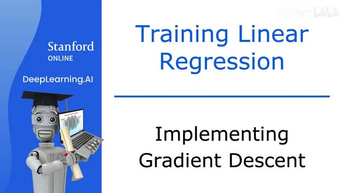
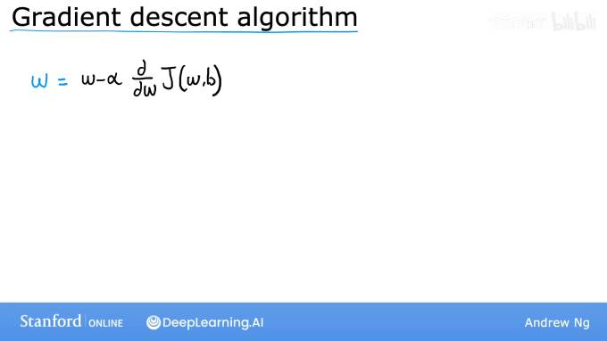
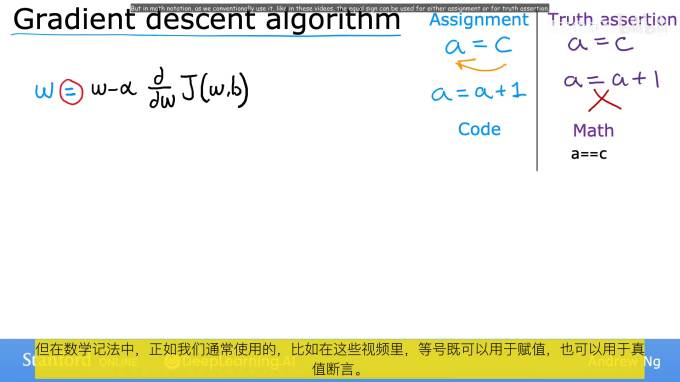
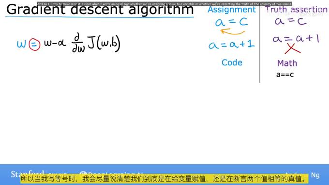
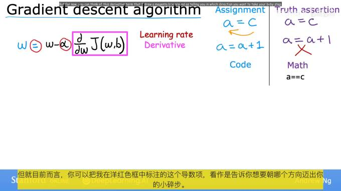
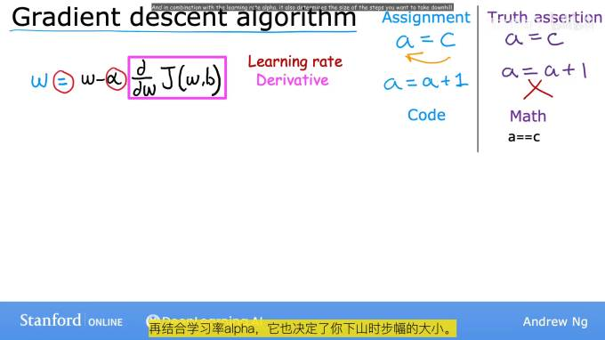
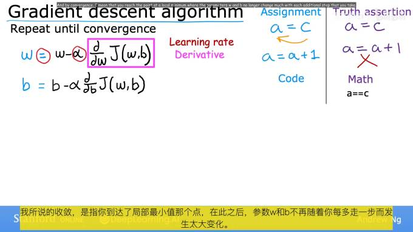
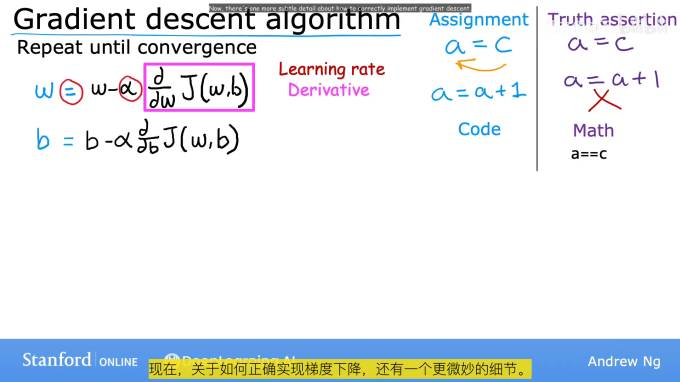
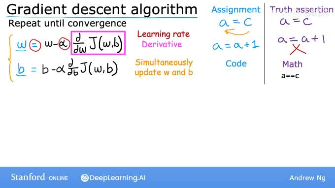

00:05我们来看看如何实际实现梯度下降算法。

00:10让我写下梯度下降算法。

00:16在每一步中，参数 w 会被更新为 w 的旧值减去 alpha 乘以这一项，即代价函数 J 括号 w，b 对 w 的偏导数。
00:31所以这个表达式说的是，更新你的参数 w，方法是取 w 的当前值，并对其进行少量调整，也就是右边这个表达式，减去 alpha 乘以后面这一项。


00:48好的，如果你觉得这个等式里有太多内容，没关系。
01:00首先，这里的这个等号记法。
01:03注意，我说过我们用这个等号来给 w 赋值。
01:09所以在这里，这个等号是赋值运算符。
01:14具体来说，在这种语境下，如果你写代码 a 等于 c，意思是取 c 的值，并将其存储到电脑的变量 a 中。
01:26或者如果你写 a 等于 a 加一，意思是将 a 的值设为 a 加一，即将 a 的值增加一。
01:37所以编程中的赋值运算符与数学中的真值断言是不同的，在数学里，如果我写 a 等于 c，我是在断言，即我声称 a 和 c 的值彼此比相等。


01:54而且希望我永远不会写一个真值断言 a 等于 a 加一，因为你知道，那根本不可能是真的。
02:04所以在 Python 和其他编程语言中，真值断言有时会写成双等号。
02:12所以你可能会看到代码写 a 双等于 c，如果你在测试 a 是否等于 c。
02:18但在数学记法中，正如我们通常使用的，比如在这些视频里，等号既可以用于赋值，也可以用于真值断言。

02:29所以当我写等号时，我会尽量说清楚我们到底是在给变量赋值，还是在断言两个值相等的真值。

02:41现在，让我们更深入地了解这个等式中各个符号的含义。
02:47这里的符号是希腊字母 alpha。
02:51在这个等式中，alpha 也被称为学习率。
02:57学习率通常是一个介于零和一之间的较小的正数。
03:06alpha 的作用是，它基本上控制了你下山时迈出的步子有多大。
03:13如果 alpha 非常大，那对应的是一个非常激进的梯度下降过程，你会试图迈出巨大的步幅下山。
03:22而如果 alpha 非常小，那你就会迈着小碎步下山。
03:28我们稍后会回来更深入地探讨如何选择一个好的学习率 alpha。
03:34最后，这一项是代价函数 J 的导数项。
03:41我们现在先不深究这个导数的细节，但稍后你会了解更多关于导数项的内容。
03:48但就目前而言，你可以把我在洋红色框中标注的这个导数项，看作是告诉你想要朝哪个方向迈出你的寸小步。

04:00再结合学习率 alpha，它也决定了你下山时步幅的大小。

04:08现在，我的确想提一下，导数来自微积分。
04:13即使你不熟悉微积分，也别担心。
04:17即使完全不懂任何微积分，你也能在本期和下期视频中，弄清楚关于这个导数项你需要知道的所有。

04:28记住，你的模型有两个参数，不仅仅是 w，还有 b。

04:33因此你也有一个更新参数 b 的赋值操作，看起来非常相似。
04:40b 被赋值为 b 的旧值减去学习率 alpha 乘以这个稍有不同的导数项，即 J 括号 w，b 对 b 的偏导数。
04:54还记得在曲面图上，你正迈着小碎步直到抵达山谷底部吗？
05:02对于梯度下降算法，你会重复这两个更新步骤，直到算法收敛。
05:09我所说的收敛，是指你到达了局部最小值那个点，在此之后，参数 w 和 b 不再随着你每多走一步而发生大大 f 化。

05:21现在，关于如何正确实现梯度下降，还有一个更微妙的细节。

05:27你要更新两个参数，w 和 b，对吧？
05:32所以这个更新对两个参数 w 和 b 都会发生。
05:37一个重要的细节是，对于梯度下降，你需要同时更新 w 和 b，意思是你想在同一时间更新这两个参数。

05:51我这么说的意思是，在这个表达式中，你要将 w 从旧 w 更新为新 w。
06:00同时你也在将 b 从其旧值更新为 b 的新值。
06:06而实现的方法是计算右侧，为 W 和 B 计算出这个东西，并在同一时刻，同时将 W 和 B 更新为新值。
06:22那么，我们来看看这意味着什么。
06:25这是实现梯度下降的正确方式，即执行同时更新。
06:31这将一个变量 temp_w 设为那个表达式，也就是 w 减去这一项。
06:39我们再设另一个变量 temp_b，等于那个，即 b 减去这一项。
06:46这样你计算了两个右侧，算出了两个更新值，并把它们存入变量 temp_w 和 temp_b 中。
06:56然后你把 temp_w 的值复制给 w，再把 temp_b 的值复制给 b。
07:06现在，你可能注意到的一点是，这里的 w 值是 w 被更新之前的值。
07:15这里，请注意，进入导数项的是更新前的 w，明白了吗？
07:23相比之下，这里有一个不正确的梯度下降实现，它没有执行同时更新。
07:30在这个不正确的实现中，我们计算 temp_w，和之前一样。
07:39现在，情况开始有所不同了。
07:42我们在为另一个参数 b 计算新值之前，就先用 temp_w 中的值更新了 w。
07:51接下来，我们计算 temp_b 等于 b 减去这一项。
07:58最后，我们用 temp_b 中的值更新 b。
08:03右边实现和左边实现的区别在于，如果你看这里，这个 w 已经被更新成了这个新值。

08:13而正是这个更新后的 w，实际进入了代价函数 J 括号 w，b 中。
08:20这意味着，右边这里的这一项，和你在左边看到的这一项，并不相同。
08:28那也意味着，右边这个 temp_b 项，和左边的 temp_b 项也不完全相同。
08:37因此，右边更新后的 b 值，和左边变量 b 更新后的值也不相同。
08:46用代码实现梯度下降时，实际上采用正确的同时更新方式实现起来更自然。
08:57当你听别人谈论梯度下降时，他们总是指执行参数同时更新的梯度下降。
09:05然而，如果你要实现非同时更新，结果多半也能差不多工作，但这样做并非真正正确的实现方式。
09:17这其实是某种具有不同性质的其他算法。
09:21所以，我建议你坚持正确的同步更新，不要使用右边这个不正确的版本。
09:30那么，这就是梯度下降。
09:32在下期视频中，我们将详细探讨导数项，你在本期视频中看到过，但我们并未真正详细讨论。
09:42导数是微积分的一部分。
09:44再强调一次，如果你不熟悉微积分，别担心。
09:49你完全不需要懂微积分就能完成这门课或这个专项课程，你将拥有实现梯度下降所需的全部信息。
10:00在接下来的下期视频中，我们会一起过一遍导数，而你将会带着自己实现和应用梯度下降所需的直一觉和知识离开。
10:12我认为，知道如何实现这个，对你来说会是件激动人心的事。
10:18那么，让我们进入下期视频，看看具体怎么做。